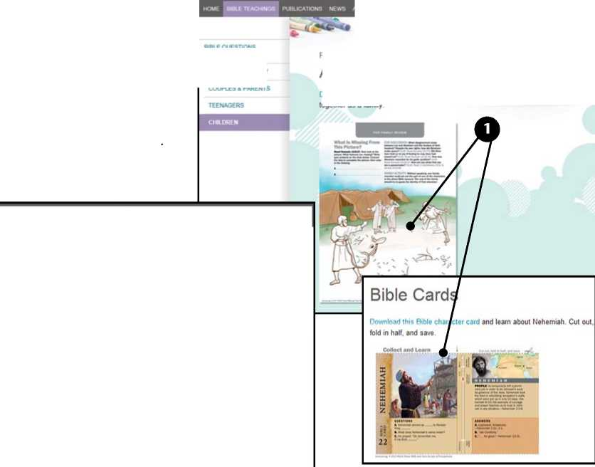

WEEK STARTING DECEMBER 10
Song 32 and Prayer
Q Congregation Bible Study:
jr chap. 2 V14-19, box on p. 25 (30 min.)
Q Theocratic Ministry School:
Bible reading: Zephaniah 1-Haggai 2 (10 min.)
No. 1: Haggai 1:1-13 (4 min. or less)
No. 2: What Is the Origin of Human Philosophies?—rs p. 289 V3-p. 290 V2 (5 min.) No. 3: By Gaining the Mind of Christ, We Know More About Jehovah—Matt. 11:27 (5 min.)
Q Service Meeting:
Song 107
15 min: The Theocratic Ministry School for 2013. Talk by the school overseer. Using the Theocratic Ministry School instructions for 2013, discuss points needing emphasis locally. Encourage all to be diligent in fulfilling their assignments, in participating in Bible highlights, and in applying the suggestions given weekly from the Ministry School book.
15 min: “Be Peaceable With All Men.” Questions and answers. Have a brief two-part demonstration showing first the improper and then the proper way to respond to an irate householder.
Song 39 and Prayer
1 Jehovah’s people are peace-loving, and our ministry is one of peace. (Isa. 52:7) At times, though, we encounter people who are upset because we have called at their door. What will help us to be peaceable in such sit-uations?—Rom. 12:18.
1. What Bible counsel should we apply when encountering householders who are upset?
2 Have Insight: Although some react angrily because they oppose the truth, others may display irritation for reasons unrelated to our message. Perhaps we called at an inopportune time. The householder may be upset over personal problems. Even if it is the good news that has made him angry, we should remember that his response is likely because he has been misled. (2 Cor. 4:4) Having insight will help us to remain calm and not take his reaction personally.—Prov. 19:11.
3 Demonstrate Respect: Many in the territory have strongly held beliefs. (2 Cor. 10:4) They have a right to choose whether they will listen or not. Never would we want to belittle a householder’s beliefs or convey an attitude of superiority. If we are asked to leave, we should respectfully comply.
4 Speak Graciously: Even if we are verbally abused, our reply should be mild and gracious. (Col. 4:6; 1 Pet. 2:23) Rather than being drawn into an argument, try to find common ground. Perhaps we can kindly inquire about the reasons for the householder’s objection. In order to avoid antagonizing him further, however, at times it is best not to try to continue the conversation.—Prov. 9:7; 17:14.
5 If we are peaceable, the householder may well remember our reaction and listen the next time someone tries to give him a witness. (Rom. 12:20, 21) Even if he seems firm in his opposition, one day he may become our brother. (Gal. 1:13, 14) Regardless of whether he ever takes an interest in the truth, we will honor Jehovah and adorn our teaching if we maintain our self-control and demonstrate peaceableness.—2 Cor. 6:3.
2. Why is it important for us to have insight?
3. How may we demonstrate respect for the householder?
4. What does it mean to speak graciously?
5. What benefits come from being peaceable in the ministry?
WEEK STARTING DECEMBER 17
Song 97 and Prayer
Q Congregation Bible Study:
jr chap. 2 ^20-27, box on p. 29 (30 min.)
Q Theocratic Ministry School:
Bible reading: Zechariah 1-8 (10 min.)
No. 1: Zechariah 8:1-13 (4 min. or less)
No. 2: How We Show That Jehovah Is Our Sovereign Lord—Ps. 73:28 (5 min.)
No. 3: Why Is It an Evidence of Clear Thinking to Study the Teachings of Jesus Christ Instead of Human Philosophy?—rs p. 290 fl3-p. 291 fl3 (5 min.)
Q Service Meeting:
Song 65
5 min: “Ideas for Offering the Magazines in . . .” Discussion.
10 min: The Message We Must Proclaim —“Fear the True God and Keep His Commandments.” Enthusiastic talk based on the Ministry School book, page 272, to the subheading on page 275.
15 min: Have You Tried It? Discussion. By means of a talk, briefly review information from these recent articles in Our Kingdom Ministry: “Witness in Business Territory With Confidence” (km 3/12), “Help People to Listen to God” (km 7/12), and “Could You Share in Evening Witnessing?” (km 10/12). Invite audience to comment on how they have benefited from applying the suggestions in these articles.
Song 117 and Prayer
WEEK STARTING DECEMBER 24
Song 5 and Prayer
Q Congregation Bible Study:
jr chap. 3 ^1-6 (30 min.)
Q Theocratic Ministry School:
Bible reading: Zechariah 9-14 (10 min.)
No. 1: Zechariah 11:1-13 (4 min. or less)
No. 2: Whose Prayers Is God Willing to Hear?—rs p. 292 fl1-p. 293 fl2 (5 min.)
No. 3: In What Situations Might We Apply Proverbs 15:1 ? (5 min.)
Q Service Meeting:
Song 75
30 min: How We Can Make Good Use of Our Official Web Site. Discussion of pages 3-6. When considering page 4, have a three-minute demonstration of a family concluding their Family Worship evening. The family head asks for ideas about what to cover the following week, and the children point out items from the “Teenagers” section of the Web site that they would like to discuss. Invite audience to comment on how they have used jw.org, or plan to use it, for personal and family study. When considering page 5, have a three-minute demonstration of a publisher with a mobile device using the site to answer a householder’s question about our beliefs. When considering page 6, have a four-minute demonstration of a publisher talking to an interested person who prefers to read in a different language. The publisher uses his mobile device or the householder’s computer to display a page from the Know the Truth tract or the Bible Teach book in the householder’s language and discusses it with him. Invite audience to comment on how they have used jw.org in the ministry.
Song 101 and Prayer
We customarily have a monthly Service Meeting part about offering the magazines. Its purpose is not to review the contents of the magazines. Rather, this part is designed to discuss ideas for offering the magazines. Therefore, according to the instructions, the assigned brother gives a very brief introduction to stimulate enthusiasm for the magazines. Then, he obtains publishers’ suggestions on
one article (or series) at a time so that all can follow along and take note of ideas they want to use. Rather than inviting the audience to give an entire presentation, he requests several comments on an interest-arousing question to ask and then asks for some comments on a scripture to read. He concludes by having demonstrations for each magazine. We are encouraged to review the magazines in advance and to be ready to give our suggestions. If all prepare well, this part will help us to sharpen the face of one another.—Prov. 27:17.
© 2012 Christian Congregation of Jehovah’s Witnesses. All rights reserved. Our Kingdom Ministry (ISSN 1067-7259) is published monthly by Christian Congregation of Jehovah’s Witnesses; C. I. Woody, President; W. H. Nonkes, Secretary-Treasurer; 2821 Route 22, Patterson, NY 12563-2237. Periodicals Postage Paid at Patterson, NY, and at additional mailing offices. POSTMASTER: Send address changes to Our Kingdom Ministry, 1000 Red Mills Road, Wallkill, NY 12589-3299. Printed in Canada.
Jesus commissioned us to preach the good news of the Kingdom “in all the inhabited earth for a witness to all the nations.” (Matt. 24:14) In order to help us ‘fully accomplish our ministry,’ watchtower.org, jw-media.org, and jw.org have been combined into the redesigned jw.org Web site.—2 Tim. 4:5.
“All the Inhabited Earth”: About one third of the earth’s population uses the Internet. It has become the primary source of information for many, especially young people. Our site gives Internet users truthful answers to Bible questions. It introduces them to Jehovah’s organization and makes it easy for them to request a free home Bible study. It enables the good news to penetrate areas of the earth where people have few opportunities to hear the Kingdom message.
“All the Nations”: In order to give a witness to “all the nations,” we must present Bible truth in different languages. Visitors to jw.org can easily find information in about 400 languages, more than any other Web site.
Make Good Use of It: The redesigned jw.org Web site is not just for the purpose of witnessing to unbelievers. It has been designed for use by Jehovah’s Witnesses too. If you have access to the Internet, we encourage you to get acquainted with jw.org. The following are some suggestions on how to use it.
_
http^^^v jA.org/en jehov*h5-»vitnes$eszfaq/
| _J FAQ. About JohovA. > W«_
\el Jehovah s Witnesses
wrt LAacuAce ^QMh
O Enter www.jw.org in the address field of the Internet browser of your computer.
©Explore the site by clicking the section headings, menu options, and links.
©Try using jw.org on your Internet-enabled mobile device. The page layout adjusts to fit the smaller screen, but the information is the same.
Frequently Asked Questions About Jehovah's Witnesses
Beliefs
Jehovah's Witnesses
fl B®1£ TEACMNOS PUBLICATIONS NtWS
ABOUT US
Do You Believe That You Have the One True Religion?
Do You Feel That You Ar* the Onty People Who W.H Be Saved?
Top Questions
■ Whr Oaves CM eaaMpueM AnMnMiMayo'
• Oe vg« not >x am »a Ora*
a HaasvesrvimWiaacar'
Ministry
Organization
Practices
Help for the Family
The farrwy can be a haven of love and a refuge from datfy stresses You can make that deal no a realty tar your Camay &>■ appt) mg practical advice from me Bne
Read the Latest Magazine Online: Read The Watchtower and Awake! online several weeks before receiving the printed copies in the congregation. Listen to audio recordings of a maga-zine.—Go to “Publications/Magazines.”
Read Material That Appears Only on the Web Site: Some material, such as “For Young People,” “My Bible Lessons,” “For Family Review,” and “Young People Ask,” now appears only on our Web site. Go online and consider some of this material during your personal and family study.—Go to “Bible Teachings/ Children” or “Bible Teachings/Teenagers.”
Get the Latest News: Read encouraging reports and experiences, and watch video clips that highlight the progress of our work around the world. Reports on disasters and persecution can help us to be specific in our prayers for the affected brothers. (Jas. 5:16)—Go to “News.”
Do Research Using Online Library: If this feature is available in your language, use a computer or a mobile device to read the daily text online or to do research in some of our recent publications.—Go to “Publications/Online Library,” or type www.wol.jw.org in the address field of your browser.

Click on the picture or the “Download” link. The picture displays in a PDF document window. Print it and use the printout as an activity for your child.
[2| Click “Play” to watch a video.
ABOUT US
HELP FOP THE FAMILY
BBLE QUESTIONS ANSWERED
COUPLES & PARENTS
Picture Activities
Abraham Makes Peace With Lot
Download and print this activity, complete the picture, then answer the questions together as a family
Direct People to the Web Site: Some who hesitate to converse with us or accept literature are willing to investigate Jehovah’s Witnesses by looking at jw.org in the privacy of their home. So publicize the Web site at every appropriate opportunity.
Answer Questions: At times a householder, an interested person, or an acquaintance will ask a question about Jehovah’s Witnesses or our beliefs. Show him the answer on the spot, using a mobile device or a computer. It is often best to read the cited scriptures directly from the Bible. If you do not have ready access to the Internet, explain how the person can use jw.org to find the answer himself.—Go to “Bible Teachings/Bible Questions Answered” or “About Us/Frequently Asked Questions.”
Send an Article or a Publication to Someone You Know: Attach a downloaded PDF or an EPUB to an e-mail. Or download an audio version of a publication onto a CD. Each time you give someone who is not baptized a complete electronic book, brochure, or magazine, you may count it as a placement. Material should not be sent anonymously or in bulk. Neither should it be uploaded to any other Internet Web site.—Go to “Publications.”
Show the Latest News About Jehovah’s Witnesses: This will help Bible students and others you are calling on to develop appreciation for the worldwide scope of our work and our Christian unity. (Ps. 133:1)—Go to “News.” Our Official Web Site—Use Itto Help Someone Who Speaks a Different Language
O Under “Publications,” find the item you wish to download, and click the button for the text or audio format you want.
©Click the MP3 button to display a list of individual articles. Click the article title to download it or |) to listen to it online.
©Choose another language from this list if you want to download a publication in that language.
JUNE 2012
Awake!
Table of Coat
English
MP3
The Wb(ch tower and Awake! Magazines
■ podcasts
AWAKE!
P| EPUB POT
0000 I 0000 4
Download All Files (ZIP)
Download
Table of Contents
is Your Food Safe?
1 ShopWfeefy
2 Keep it Clean
3 Prepare and Store Food Carefuty
4 Be Observant When Eating Out
Healthful Food for AM—Sooni
The Bible's Viewpoint—Can the Dead Help the Living?
Q The Bible—A Book of Accurate Prophecy—Part 2—Flee From Babyloni ... ■■■- — — ■
Show Him Our Web Site: Demonstrate how he can use the “Site Language” list to see the Web site in his language. (In some languages, only a portion of the site is available.)
Show Him a Web Page in His Language: Display a page from one of our publications, such as the Bible Teach book or the Know the Truth tract. Choose the householder’s language from the “Read In” list.
Let Him Listen to an Article: Find an article for which there is an audio track in the person’s language, and play it for him. If you are learning another language, improve your skill by listening to an audio track in that language as you read.—Go to “Publications/Books and Brochures” or “Publications/Magazines.”
Witness to the Deaf: If you find a deaf person, play a sign-language video of a chapter from the Bible, a book, a brochure, or a tract. —Go to “Publications/Sign Language.”

O Click |)| to play the selected audio track (if available in your language) or one of the “Download Options” buttons to download the publication.
©Choose another language from the “Read In” list to show this page in that language.
©Click “Next” or a link in the “Table of Contents” to read another article or chapter.
What Does the Bible Really Teach?
CHAPTER ONE
What Is the Truth About Gnd.
•lave you ever noticed me way chtdren ask questions? Many start asking as soon as they team to speak van wide eager eyes they lock «i at you and ask such mogs as Why is tne sky true’ what are tne stars made of? Who taught ne Birds to smg? You may try hard io answer but«is not atenseasy Evenyour best answer may lead to yet another quesaon Why?
: CMdren are not tne onr, ones who ask quesaons As we grow vp we keep asking We do tnisn order to sndoaway toieam of dangers that we need to avoid or io saasty our cimosay But many people seem to stop asong questions espeoary the moat anportart ones At least, they stop searching tor me answers
' Trunk about the quesaon on the cove* cans book tne questions raised r the preface orthoseat me begmng orns chapter These are some of ne most enportant questions you can ask Yet many people have gwen up irymg to «nd the answers Wh,? Does the Boe nme me answers? Some *ee< mat as answers are too hard to imderstand Omers worry mat asking questions could lead to shame or embarrassment And
'DOWNLOAD OPTIONS n Epua pt* Q ►K’l AAC
□ pstrysous
htxr Q
VWwl t» Gods Purpose tor m» Earn?
Does God reefy care about you?
What a God toe? Does he have a name?
is ■ posse* io get ctose to God?
What Does the Bible Realty Teach?
RfADIH
Ml*
► MM MM < MM
±*Wtt4JWH«WCT«J? #
fflWffi-LW?
«fi38E
4UE. tttMttff. ftftiJESESan?
¥-? iQj i ^e;? gv. ■^-^.-..-■Tr -■:.
APPEARED »4

DOWNLOAD OPTIONS
Rl EPS* Pt* Q ►MPJ A*C
WEEK STARTING DECEMBER 31
Song 60 and Prayer
Q Congregation Bible Study:
jr chap. 3 ^7-12 (30 min.)
Q Theocratic Ministry School:
Bible reading: Malachi 1-4 (10 min.)
Theocratic Ministry School Review (20 min.)
Q Service Meeting:
Song 72
10 min: “New Series to Appear in The Watchtower.” Talk. Use the sample presentation on page 8 to demonstrate how we can use the magazines to start a Bible study on the first Saturday in January.
10 min: What Do We Learn? Discussion. Have Luke 10:38-42 read. Consider how this account can help us in our ministry.
10 min: The Literature Offer for January and February. Discussion. Consider features of the literature being offered, and have two presentations demonstrated.
Song 134 and Prayer
The following questions will be considered at the Theocratic Ministry School during the week beginning December 31, 2012. The date when each point is scheduled for discussion is included so that research can be done when preparing for the school each week.
1. How has the prophecy recorded at Joel 2:1-10, 28 about the invasion by insects been fulfilled? [Nov. 5, w07 10/1 p. 13 par. 1]
2. In whom does Amos 8:11 find fulfillment, and what question should we ask ourselves, since we are living amid spiritual plenty? [Nov. 12, jd pp. 60-61 par. 9]
3. What may have contributed to the Edomites’ being presumptuous of heart, and what reality must we never forget? (Obad. 3, 4) [Nov. 19, w07 11/1 p. 14 par. 1]
4. In what way did Jehovah show regret over the calamity that he had spoken of causing to the inhabitants of Nineveh? (Jonah 3:8, 10) [Nov. 19, w07 11/1 p. 15 par. 1]
5. How can walking in God’s name strengthen our friendship with him? (Mic. 4:5) [Nov. 26, jd p. 88 par. 12]
6. What assurance does the fulfillment of the prophecy recorded at Nahum 2:6-10 give us? [Dec. 3, w07 11/15 p. 9 par. 2; w88 2/15 p. 28 par. 7]
7. What is the meaning of Haggai 1:6, and what lesson should we take to heart? [Dec. 10, w06 4/15 p. 22 pars. 12-15]
8. How can we apply the practical advice recorded at Zechariah 7:10 that we “scheme out nothing bad against one another” in our hearts? [Dec. 17, jd p. 113 par. 6; w07 12/1 p. 11 par. 3]
9. Why are the words of Zechariah 4:6, 7 comforting to worshippers of Jehovah today? [Dec. 17, w07 12/1 p. 11 par. 1]
10. In view of what is stated at Malachi 3: 16, why should we never weaken in our determination to maintain our integrity to God? [Dec. 31, w07 12/15 p. 29 par. 3]
On the first Saturday of each month, we have been using articles from the Watchtower series “Learn From God’s Word” to start Bible studies. Starting in January, this series is being replaced by “Bible Questions Answered,” which will appear on the back page of the public edition. We can use “Bible Questions Answered” in the ministry in much the same way that we used “Learn From God’s Word.” (km 12/10 p. 2) As in the past, Our Kingdom Ministry will contain a sample presentation that we can use on the first Saturday of the month.
WEEK STARTING JANUARY 7
Song 104 and Prayer
Q Congregation Bible Study:
jr chap. 3 ^13-19 (30 min.)
Q Theocratic Ministry School:
Bible reading: Matthew 1-6 (10 min.) No. 1: Matthew 5:21-32 (4 min. or less) No. 2: What Could Make a Person’s Prayers Unacceptable to God?—rs p. 293 ^3-p. 294 ^3 (5 min.)
No. 3: What It Means to Have Jehovah as “Your Share”—Num. 18:20 (5 min.)
Q Service Meeting:
Song 38
10 min: Ideas for Offering the Magazines in January. Discussion. Take 30 to 60 seconds to relate why the magazines will have appeal in your territory. Then, using the cover subject of The Watchtower, invite the audience to give suggestions on an interest-arousing question to ask and then invite suggestions on a scripture to read. Do the same for Awake! and, if time allows, for one other article from either magazine. Demonstrate how each issue may be offered.
10 min: Local needs.
10 min: A Clean Kingdom Hall Honors Jehovah. Talk by an elder. Jehovah is a holy God, so physical cleanness should be a priority among his people. (Ex. 30:17-21; 40:30-32) By keeping our place of worship clean and in good repair, we bring Jehovah glory. (1 Pet. 2:12) Relate local or published experiences showing how the appearance of a Kingdom Hall resulted in a witness to the community. Interview the brother who coordinates cleaning and maintenance regarding local arrangements. Encourage all to share in the upkeep of the Kingdom Hall.
Song 127 and Prayer
■ The Memorial for 2014 will be on Monday, April 14.
■ Publishers auxiliary pioneering during March 2013 will have the option of working toward a 30-hour or a 50-hour requirement for the month. Additionally, if the circuit overseer is visiting the congregation in March, all who are serving as auxiliary pioneers are invited to attend the entire meeting the circuit overseer has with the regular pioneers.
To Start Bible Studies on the First Saturday in January
“We would like to ask your opinion. What would you say God’s personal name is? [Allow for response.] Notice what we read here.” Hand the householder the January 1 Watchtower, point out the article on the back cover, and consider together the material under the first subheading and at least one of the scriptures. Offer the magazines, and arrange to return to discuss the next question.
WAT4HTO6I7 January 1
Announcing Jehovah's Kingdom * *
“A lot of people have been talking about the end of the world. Do you think that the end of the world is something we should fear? [Allow for response.] According to this, there will be some survivors. [Read 1 John 2:17.] This magazine gives the Bible’s answer to four common questions about the end of the world.”
!"#$ January
“We are visiting as a public service to families. Do you think it’s important for families to put into practice these words of Jesus? [Read Acts 20: 35b. Then allow for response.] Teaching children to be unselfish can be a real challenge in a world where many seem to think only of themselves. This article outlines some practical ways for parents to raise their children to be considerate of others.”
■ Literature offer for December: Feature one of the following tracts: All Suffering Soon to End!, Jehovah—Who Is He?, Jesus Christ—Who Is He?, or Would You Like to Know the Truth? If there is interest, demonstrate a Bible study using the Bible Teach book or one of the brochures Listen to God or Listen to God and Live Forever. January and February: Feature one of the following 32-page brochures: Does God Really Care About Us?, When Someone You Love Dies, or You Can Be God’s Friend! When making return visits, introduce the Bible Teach book or if more appropriate to the person’s needs, one of the brochures Listen to God or Listen to God and Live Forever, and try to
Field Service Highlights
We are pleased to report a new all-time peak in the Bahamas during the month of July! The total of 191 regular pioneers was an increase of 14 over the previous peak set in March 2012. In addition, when comparing the first 11 months ofthis service year with the same period last year, Bermuda had an increase of 6.3 percent in Bible studies, the Turks and Caicos Islands had an increase of 7.6 percent in publishers, and the United States had an increase of 4.5 percent in regular pioneers. Truly, Jehovah’s people are following the admonition to “let your light shine.”—Matt. 5:16.
8